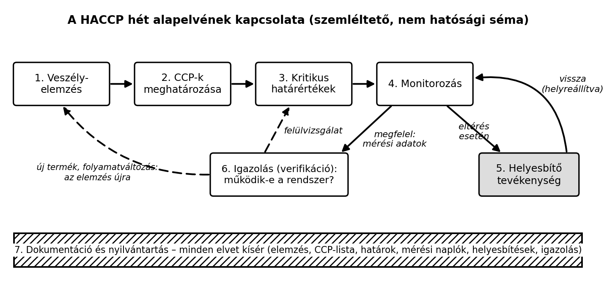

Képzeld el, hogy egy reggeli műszakban a főzött vaníliakrém éppen hűl, a hűtőkamra hőmérséklet-naplója pedig üres. A hatósági ellenőr megkérdezi: „Melyik lépés a kritikus pont? Milyen határértéket figyel, és mit tesz, ha átlépi?” Ha a cukrász csak annyit tud, hogy „mindenkit tisztán tartunk és hűtünk”, az kevés. A HACCP-rendszer alapelvei adják meg azt a gondolkodási sémát, amellyel a veszélyeket nem hangulat vagy megszokás alapján, hanem lépésről lépésre, mérhetően és dokumentálva szabályozzuk.
A HACCP betűszó az angol Hazard Analysis and Critical Control Points kifejezésből származik, magyarul veszélyelemzés és kritikus szabályozási pontok. Olyan megelőző élelmiszerbiztonsági rendszer, amely a késztermék utólagos ellenőrzése helyett a gyártás folyamatában keresi meg azokat a pontokat, ahol egy veszély felléphet vagy felerősödhet, és ott mérhető szabályozást ír elő.
A Élelmiszer eredetű megbetegedések: ételmérgezés és ételfertőzés alfejezetben megismertük a főbb kórokozókat, a Allergének és intoleranciák: tájékoztatás és allergénkezelés a cukrászüzemben alfejezetben az allergénkockázatokat, a Takarítás, fertőtlenítés, mosogatás és hulladékkezelés alfejezetben pedig a takarítás és fertőtlenítés alapjait. Ez a fejezet ezekből az elemekből épít fel egy egységes rendszert. A hét alapelvet és a döntési fát a következő, HACCP a cukrászatban: CCP-k, hőmérsékletnapló és helyesbítő tevékenység alfejezetben fogjuk konkrét termékekre alkalmazni.
Egy kis cukrászműhelyben három veszélyt értékelnek:
A veszélyeket két kérdéssel pontozzák:
A kockázati szám a két érték szorzata. A magasabb szám jelzi, hogy a lépéssel kiemelten kell foglalkozni. Ez a pontozás nem helyettesíti a kórokozóra vonatkozó szakirodalmi adatokat, de segít a HACCP-csoportnak abban, hogy a figyelmet a valóban kritikus pontokra irányítsa.
Megjegyzés. A kockázatbecslés a vállalkozás saját felelőssége, a pontozási skálát és a küszöbértéket a HACCP-csoportnak kell meghatároznia. A fenti pontok csak tanulási példák, nem hatósági előírás.
A HACCP nem légüres térben működik. Az alatta húzódó higiéniai alapokat előfeltétel-programoknak nevezzük. Ide tartozik minden, amit a A cukrászüzem higiéniája főfejezet eddigi részei tárgyalnak:
Ezek az úgynevezett jó higiéniai gyakorlat (GHP, Good Hygiene Practice) részei. Ha a GHP hiányzik, a HACCP nem tud működni, mert állandóan alapvető hibákkal kellene foglalkozni.
Definíció.
A gyakorlatban a GHP a „minden nap alapból így dolgozunk” szintje, a HACCP pedig a „tudatosan kiválasztott, mérhető, dokumentált kulcspont” szintje.
A nemzetközileg elfogadott módszer szerint a HACCP-t 12 lépésben vezetjük be. Az első öt lépés az úgynevezett előkészítő lépés, a további hét pedig a hét HACCP-alapelv alkalmazása.
Szabály.
A hét alapelv sorrendje nem véletlen. Először meg kell tudnunk, mi a veszély, utána dönthetjük el, hol szabályozzuk, majd ehhez kell mérhető határ, felügyelet, javítás, bizonyíték és írásos nyom.
Definíció. A veszélyelemzés során számba vesszük az alapanyagokból, a műveletekből, a dolgozókból, a berendezésekből és a környezetből adódó biológiai, kémiai és fizikai veszélyeket, felmérjük a bekövetkezés valószínűségét és a következmény súlyosságát, majd meghatározzuk a szabályozási módot.
Példák cukrászati veszélyekre:
| Veszély típusa | Cukrászati példa |
|---|---|
| Biológiai | Salmonella nyers tojásban, Staphylococcus aureus a kézről, Listeria a hűtött krémes termékben |
| Kémiai | túlzott adalékanyag-adagolás, tisztítószer-maradvány, nem élelmiszeripari fém- vagy műanyagrész |
| Fizikai | tojáshéjdarab, dióhéj, törött edényszilánk, sütőrostélyról levált fémrész |
A veszélyelemzéshez segítséget ad a Élelmiszer eredetű megbetegedések: ételmérgezés és ételfertőzés alfejezet kórokozó-térképe és a Allergének és intoleranciák: tájékoztatás és allergénkezelés a cukrászüzemben allergén-táblázata. A kémiai veszélyeknél a Kémiai szennyezők és technológiai eredetű szennyezők alfejezetben tanult technológiai szennyezőket is figyelembe kell venni.
Definíció. A kritikus szabályozási pont (CCP, Critical Control Point) olyan lépés, ahol szabályozást kell alkalmazni ahhoz, hogy egy élelmiszerbiztonsági veszélyt megelőzzünk, megszüntessünk vagy elfogadható szintre csökkentsünk.
Például a tojásos krém hőkezelése azért CCP, mert a megfelelő hőmérséklet–idő kombinációval a Salmonella elpusztul. A hűtött tárolás pedig azért CCP, mert a hőmérséklet tartásával a túlélő csírák szaporodását lassítjuk.
A következő lépésekben leírt alapelvekkel párhuzamosan dolgozunk:
Definíció. A kritikus határérték az a mérhető érték, amely elválasztja az elfogadhatót az elfogadhatatlantól, például hőmérséklet, idő, pH, vízaktivitás vagy összetevő-arány.
A határértékeket mindig mérhető formában kell megadni. Például:
A fenti hőmérséklet-idő értékek tanulási példák, ezért minden üzemben a hatályos útmutató, a hatósági állásfoglalás vagy a gyártói adatlap alapján kell rögzíteni őket (ellenőrizendő: hatályos hőkezelési és hűtési előírások).
Definíció. A monitorozás a kritikus határértékek rendszeres mérése vagy megfigyelése annak érdekében, hogy időben észleljük a határérték átlépését.
A monitorozásnak meg kell mondania, hogy ki, mit, mikor, mivel és hogyan mér. Például:
Definíció. A helyesbítő tevékenység az az előre meghatározott intézkedéssor, amelyet akkor kell végrehajtani, ha a monitorozás azt mutatja, hogy a kritikus határértéket átléptük vagy nem teljesítettük.
A helyesbítő tevékenység nemcsak a hibás tétel kezelésére, hanem az ok megszüntetésére is irányul. Például:
Szabály. Azt is rögzíteni kell, mi történjen a CCP hibája esetén a termékkel. Például: újra hőkezelhető, átminősíthető, megsemmisíthető. A helyesbítő tevékenységet dokumentálni kell, a felelős személyt pedig meg kell nevezni.
Definíció. Az igazolás annak időszakos ellenőrzése, hogy a HACCP-rendszer a terv szerint működik, a határértékek valósak, a monitorozás megbízható, és a dokumentáció naprakész.
Az igazolás történhet belső ellenőrzéssel, hőmérő hitelesítésével, laboratóriumi mintavétellel, dolgozói meghallgatással vagy a terv időszakos felülvizsgálatával. Például havonta a HACCP-csoport átnézi a hőmérsékletnaplókat, ellenőrzi a hőmérők kalibrálását, és megnézi, hogy a helyesbítő tevékenységek bejegyzései lezárultak-e.
Definíció. A dokumentáció magában foglalja a HACCP-tervet és azokat a nyilvántartásokat, amelyek bizonyítják a rendszer működését, például hőmérsékletnaplók, helyesbítő tevékenységi lapok, kalibrálási jegyzőkönyvek, átvételi bizonylatok.
A dokumentáció akkor hasznos, ha:
Figyelem. A naplókat nem szabad előre kitölteni, utólag kitalálni, vagy ceruzával, javíthatatlanul vezetni. A hibás bejegyzést egyértelmű áthúzással, dátummal és aláírással kell javítani.
Az alábbi folyamatábra azt mutatja, hogyan kapcsolódik a hét alapelv a gyakorlatban. Ez nem maga a gyártási folyamatábra, hanem a HACCP kiépítésének logikája.

Az ábrán az 1–4. elv a tervezés és a működtetés sorrendje; az 5. elv csak eltérés esetén lép életbe; a 6. igazolás a mérési adatokból ellenőrzi a rendszert, és szükség esetén visszacsatol a határértékekre vagy a veszélyelemzésre; a 7. dokumentáció minden lépést kísér. Az elveket a Codex szerinti 12 lépéses bevezetésben az 5 előkészítő lépés után alkalmazzuk.
Nem minden fontos lépés CCP. Sok lépés a GHP keretében szabályozott, ezért szabályozási pontnak vagy ellenőrző pontnak nevezzük, de nem kritikus szabályozási pont. A különbség abban van, hogy a CCP hibája közvetlenül és nagy valószínűséggel élelmiszerbiztonsági kockázatot jelent, míg egy szabályozási pont hibája általában minőségi vagy gazdasági következménnyel jár.
Például:
A döntési fa olyan, egymásra épülő kérdéssor, amelyet minden veszélyre és minden folyamatlépésre külön-külön kell feltenni. A kérdések segítenek elkerülni azt a hibát, hogy túl sok vagy túl kevés CCP-t jelölünk ki.
A leggyakoribb kérdéssor:
A kérdéssor a Codex Alimentarius döntési fa logikáját követi (ellenőrizendő: Codex Alimentarius CXC 1-1969 hatályos változata).
Példa. Képzeljük el a tojásos főzött krém készítését. A tojássárgájás massza összeállításánál a Salmonella-veszély jelen van. A döntési fa szerint:
A HACCP-csoport a veszélyelemzéshez gyakran használ pontozást. A skála üzemenként eltérhet, ezért itt csak tanulási példát adunk.
Számítás.
Adott három veszély:
Kockázati szám:
A rangsor: A (15), C (12), B (5). A csoport az A és C veszélyt jelentősnek ítéli (küszöb pl. ≥ 10, tanulási példa), ezért ezekre lefuttatja a döntési fát: az A-ra a krémfőzés, a C-re a gyorshűtés és a hűtött tárolás lesz CCP. A B veszélyt beszállítói követelményekkel és GHP-vel kezeli. A pontszám tehát azt dönti el, mely veszély jelentős; a CCP-t a döntési fa jelöli ki a folyamatlépésre. Ez a pontszám nem jogszabályi határérték, hanem a HACCP-csoport belső döntési eszköze.
Jogszabály.
Az Európai Unió élelmiszer-higiéniai szabályozása, különösen a 852/2004/EK rendelet, előírja, hogy az élelmiszer-vállalkozónak az élelmiszer-biztonságot a HACCP elvein alapuló eljárásokkal kell biztosítania. A rendelet 5. cikke (ellenőrizendő: a pontos cikk és a hatályos szöveg) lehetővé teszi, hogy a HACCP követelményeket a vállalkozás méretéhez, tevékenységéhez és kockázatához igazodóan alkalmazzák. Kisvállalkozásoknál a HACCP lehet egyszerűsített, ha a veszélyelemzés, a CCP-k, a határértékek, a monitorozás, a helyesbítő tevékenység és a dokumentáció arányosan szerepel.
A gyakorlatban ez azt jelenti, hogy egy családi cukrászdában a HACCP-terv lehet rövidebb, a nyilvántartások pedig kézzel vezethetők, de a kritikus pontokat ott is mérni és dokumentálni kell. A „rugalmasság” nem azt jelenti, hogy a hőkezelést vagy a hűtést elhagyhatjuk.
Az alábbi táblázat egy tejszínes, tojásos főzött krém CCP-tervét mutatja be. A hőmérséklet- és időértékek tanulási példák, ezért a hatályos NÉBIH-útmutató, a vállalkozás saját hőkezelési igazolása vagy a gyártói adatlap alapján pontosítani kell (ellenőrizendő).
| Lépés | Veszély | Megelőzés | Kritikus határ | Monitorozás és dokumentum | Helyesbítő tevékenység |
|---|---|---|---|---|---|
| Főzött krém hőkezelése | Salmonella, egyes kórokozók túlélése | Tétel főzése, folyamatos keverés | pl. 85 °C maghőmérséklet, 5 perc (ellenőrizendő) | maghőmérő, időzítő, hőkezelési napló | tovább hőkezel, újra mér, szükség esetén selejtez |
| Gyorshűtés főzés után | spórás baktériumok, Staphylococcus-toxinképződés kockázata | sekély réteg, jégfürdő, keverés, gyorshűtő | pl. 60 °C-ról 20 °C-ra 2 órán belül, majd 4 órán belül ≤ 5 °C maghőmérséklet (ellenőrizendő) | maghőmérő, időbélyeg, hűtési napló | gyorshűtés fokozása, tétel újraellenőrzése, szükség esetén selejtezés |
| Hűtött tárolás tálalásig | Listeria, pszichrotróf baktériumok szaporodása | folyamatos hűtés, lefedés, FIFO-elv | pl. hűtőtér ≤ 5 °C (ellenőrizendő) | hűtő hőmérője, napi többszöri leolvasás, hőmérsékletnapló | hűtő javítása, termék áthelyezése, hosszú határérték-túllépés esetén selejtezés |
Megjegyzés. A táblázatban a dokumentum oszlop a monitorozással együtt szerepel, mert a mérés csak akkor bizonyított, ha rögzítik. A teljes CCP-tervben külön lap is használható a helyesbítő tevékenység rögzítésére.
A HACCP-rendszer minősége nem a termék színén vagy ízén, hanem a rendszer állapotán mérhető. Ellenőrzési szempontok:
Hiba 1. A HACCP csak papíron létezik.
Tünet: a naplók szépen megvannak, de a mérések elmaradnak, a hűtő
hőmérője nem hiteles.
Ok: a vezetés a HACCP-t adminisztratív kötelezettségként, nem a
biztonság eszközeként kezeli.
Megelőzés: a HACCP-csoport rendszeresen bejárja a műhelyt, a dolgozókat
bevonja, a monitorozást könnyen elérhetővé teszi. A hibás állapotot
belső ellenőrzésen azonnal rögzíteni kell.
Hiba 2. Nem mérhető kritikus határérték.
Tünet: a HACCP-tervben „jól lehűtjük” vagy „alaposan megsütjük”
szerepel.
Ok: nem a döntési fát és a mérhetőséget használták, hanem általános
elvárást írtak le.
Megelőzés: minden CCP-nél hőmérsékletet, időt, pH-t, nedvességtartalmat
vagy más mérhető paramétert kell megadni.
Hiba 3. Minden lépést CCP-nek jelölnek.
Tünet: tíz CCP szerepel a tervben, ezért a dolgozók nem tudják, melyik a
valóban fontos.
Ok: a döntési fát kihagyták, vagy a „biztonság kedvéért”
eltúlozták.
Megelőzés: a döntési fát minden veszélyre lefuttatják, és csak a valóban
kritikus lépéseket sorolják CCP-nek. A többi fontos lépést GHP szinten
kezelik.
Egy 8 fős vidéki cukrászda a szokásos nyári ellenőrzés előtt felülvizsgálja a HACCP-tervét. A HACCP-csoport a tulajdonosból, a cukrászmesterből és egy betanított dolgozóból áll. A mester kiválaszt egy terméket, a tejszínes gyümölcstorta szeletet. A termékleírás szerint piskóta, főzött vaníliakrém, tejszínhab, friss eper. A folyamatábra lépései: tojásos piskóta készítése → sütés → hűlés → krémfőzés → gyorshűtés → torta összeállítása → hűtött tárolás → tálalás. A döntési fánál kiderül, hogy a krémfőzés és a hűtött tárolás CCP, a piskóta sütése szintén CCP a tojásos massza hőkezelése miatt, a torta összeállítása viszont nem. A csoport bevezeti a hőkezelési naplót, a hűtési naplót, és a délelőttös dolgozó minden nap bejegyzi a hűtő hőmérsékletét. Két hét múlva a hűtőkamra hőmérője 8 °C-ot mutat. A betanított dolgozó azonnal a csoport vezetőjéhez fordul, a tortákat a tartalék hűtőbe viszik, és maghőmérővel ellenőrzik: a termékek maghőmérséklete 6 °C, a kamra reggeli leolvasása 4 °C volt, a túllépés tehát legfeljebb néhány órás lehetett. A HACCP-tervben rögzített szabály szerint (pl. legfeljebb 2 óra 5 °C fölött; tanulási példa, ellenőrizendő) a csoport vezetője dönt, és a döntést indokolással dokumentálja; ha a túllépés kezdete nem állapítható meg, a tejszínes-krémes termékeket selejtezni kell. Ajánlott a hűtőkamrában folyamatos hőmérséklet-adatgyűjtőt használni. A kamra javítását megrendelik. A tanulság: a HACCP akkor működik, ha a dolgozó tudja, mit mérjen, mi a határ, és kihez forduljon a hibánál.
Igaz vagy hamis? A HACCP helyettesíti a
takarítást és a kézmosást, ezért ha van HACCP-tervünk, a GHP-ra nincs
szükség.
Válasz: Hamis. A GHP előfeltétel-program, amelyre a HACCP épül.
Sorold fel a HACCP hét alapelvét.
Válasz: 1. veszélyelemzés; 2. CCP meghatározása; 3. kritikus
határértékek; 4. monitorozási rendszer; 5. helyesbítő tevékenység; 6.
igazolás (verifikáció); 7. dokumentáció és nyilvántartás.
Mi a különbség CCP és szabályozási pont között?
Válasz: A CCP hibája közvetlen, súlyos élelmiszerbiztonsági kockázatot
jelenthet, ezért mérhető határt, monitorozást és helyesbítő
tevékenységet igényel. A szabályozási pont fontos, de általában GHP-val
kezelik, és hibája inkább minőségi vagy gazdasági következménnyel
jár.
Döntési fa alapján: egy nyers tojásos tiramisukrémnél a tojás
belekeverése CCP-e?
Válasz: Ha a tiramisu hőkezelés nélkül, pasztőrözetlen tojással készül,
akkor a tojás belekeverése nem szünteti meg a veszélyt, nincs későbbi
hőkezelés, és a hibás lépésből veszélyes késztermék keletkezhet, ezért a
rendszerben a problémát alapanyag-szinten (pasztőrözött tojástermék)
kell megoldani. Ha nincs hatékony intézkedés, a lépés nem CCP, hanem a
terméket át kell tervezni.
1. feladat (A)
Nevezd meg a HACCP előfeltétel-programjai közül négyet, és sorold fel a
HACCP hét alapelvét.
2. feladat (A)
Döntési fa segítségével döntsd el, hogy a piskóta sütése CCP-e a tojásos
massza Salmonella-kockázatára. Írd le a négy kérdésre adott választ.
3. feladat (B)
Egy folyamatábrán a következő lépés szerepel: „tejszínes mousse
gyorshűtése 4 órán át a konyhaasztalon, majd hűtőbe helyezés”. Mi a
hiba? Hogyan írnád át a kritikus határértéket mérhető formában?
4. feladat (B)
Készíts egy kockázati táblázatot három kockázatra: gyakoriság 4,
súlyosság 4; gyakoriság 2, súlyosság 5; gyakoriság 5, súlyosság 2.
Számold ki a kockázati pontszámot, és rendezd csökkenő sorrendbe.
5. feladat (C)
Egy cukrászda HACCP-tervében a „hűtött tárolás” CCP-nél csak annyi
szerepel, hogy „a hűtő legyen hideg”. Elemezd, miért nem felel meg ez a
kritikus határértéknek. Adj meg egy javaslatot a kritikus határra, a
monitorozásra és a helyesbítő tevékenységre.
6. feladat (D) – gyakorlati feladat (előkészíti a HACCP a cukrászatban: CCP-k, hőmérsékletnapló és
helyesbítő tevékenység alfejezetet)
Válassz ki egy cukrászati terméket, például krémes süteményt. Készítsd
el a gyártási folyamatábrát, jelöld meg a lehetséges CCP-ket a döntési
fa szerint, és tölts ki egy CCP-táblázatot a következő oszlopokkal:
lépés; veszély; megelőzés; kritikus határ; monitorozás és dokumentum;
helyesbítő tevékenység. A hőmérséklet- és időértékeket jelöld „tanulási
példa, ellenőrizendő” megjegyzéssel.
1. feladat
Előfeltétel-programok például: személyi higiénia,
takarítás-fertőtlenítés, kártevőirtás, hulladékkezelés, képzés,
beszállítói követelmények. A hét alapelv: 1. veszélyelemzés; 2. CCP
meghatározása; 3. kritikus határértékek; 4. monitorozási rendszer; 5.
helyesbítő tevékenység; 6. igazolás (verifikáció); 7. dokumentáció és
nyilvántartás.
2. feladat
A döntési fa a tojásos piskótamassza Salmonella-kockázatára:
3. feladat
Hiba: a gyorshűtés nem kritikus határként, hanem hosszú, ellenőrizetlen
szobahőmérsékletű időként van leírva. A „4 órán át a konyhaasztalon”
éppen növeli a szaporodási kockázatot. Javított változat: „A mousse
főzött alapjának maghőmérséklete 60 °C-ról 20 °C-ra 2 órán belül, majd 4
órán belül +5 °C alá csökkenjen (tanulási példa, ellenőrizendő); a
hűtést azonnal, lehetőleg sekély rétegben vagy gyorshűtőben kezdjük. A
hőmérsékletet maghőmérővel mérjük, a hűtési naplóba bejegyezzük. Ha a
határidőt túllépjük, a tételt a HACCP-csoport értékelése alapján
selejtezzük vagy külön vizsgáljuk.”
4. feladat
Kockázati pontok:
- Veszély 1: 4 × 4 = 16
- Veszély 2: 2 × 5 = 10
- Veszély 3: 5 × 2 = 10
Csökkenő sorrend: 16, 10, 10 (a 10-es holtversenynél a súlyosság vagy a
bekövetkezés valószínűsége alapján dönt a csoport).
5. feladat
A „hideg” nem mérhető, ezért nem tudjuk megmondani, mikor van átlépve a
határ. Javítás: a hűtőtér hőmérséklete legfeljebb 5 °C legyen (tanulási
példa, ellenőrizendő). Monitorozás: a hűtő digitális hőmérőjét naponta
legalább kétszer leolvassuk, a mért értéket a hűtési naplóba írjuk.
Helyesbítő tevékenység: ha a hőmérséklet 5 °C fölé emelkedik, a
potenciálisan veszélyes termékeket azonnal másik, megfelelő hűtőbe
helyezzük, a hűtőt lezárjuk vagy javításig kiürítjük; hosszabb túllépés
esetén a HACCP-csoport dönt a selejtezésről.
6. feladat
A gyakorlati feladatnál a folyamatábra például: tészta készítése → sütés
→ hűlés → krémfőzés → gyorshűtés → összeállítás → hűtött tárolás →
tálalás. CCP: sütés (Salmonella), krémfőzés (Salmonella), hűtött tárolás
(Listeria/szaporodás). A kritikus határokhoz tanulási példákat kell
írni, és minden határértéket „ellenőrizendő” megjegyzéssel kell ellátni.
A CCP-táblázat oszlopainak meg kell egyeznie a fejezet példájával; a
dokumentumot a monitorozáshoz kapcsolva is lehet szerepeltetni.
A HACCP az élelmiszerbiztonság megelőző rendszere, amely a veszélyeket a folyamatban, mérhető pontokon szabályozza. Előfeltétele a jó higiéniai gyakorlat (GHP), amely a takarítást, kézmosást, kártevőirtást és képzést foglalja magában. A HACCP bevezetése 12 lépésből áll: az első öt a HACCP-csoport, termékleírás, felhasználási cél, folyamatábra és annak helyszíni igazolása; a további hét a hét alapelv. Az alapelvek: 1. veszélyelemzés, 2. CCP meghatározása, 3. kritikus határértékek, 4. monitorozás, 5. helyesbítő tevékenység, 6. igazolás (verifikáció), 7. dokumentáció. A CCP-t döntési fával választjuk ki: az olyan lépés CCP, amelyet kifejezetten a veszély megszüntetésére vagy elfogadható szintre csökkentésére terveztek, vagy amelynek hibája esetén a későbbi lépésben már nem szűnik meg a veszély. A kritikus határ mérhető kell legyen, például hőmérséklet, idő, pH. A monitorozás megmondja, ki, mit, mikor, mivel mér. A helyesbítő tevékenység a hibás tétel kezelésére és az ok megszüntetésére is kiterjed, dokumentálni kell. Ezt a hét alapelvet és a döntési fát a HACCP a cukrászatban: CCP-k, hőmérsékletnapló és helyesbítő tevékenység alfejezetben konkrét termékekre, CCP-naplóra és helyesbítő tevékenységre alkalmazzuk.
A fejezet a 852/2004/EK rendelet HACCP-alapú eljárásokra vonatkozó követelményeire, a Codex Alimentarius HACCP-elveire és a NÉBIH jó higiéniai gyakorlat útmutatóira támaszkodik, de a hivatkozott cikkek, mellékletek, a kisvállalkozások rugalmassági feltételei és a határértékek ellenőrzést igényelnek. Az 5. cikk pontos szövege, a hőkezelési hőmérséklet-idő, a gyorshűtési határidő és a hűtőtér megengedett hőmérséklete tanulási példa, ezért ellenőrizendő a hatályos uniós és magyar jogszabály, a NÉBIH-útmutató és a vállalkozás saját HACCP-dokumentációja alapján. A kockázati pontozás és a döntési fa nem jogszabályi kötelezettség, hanem a HACCP-csoport módszertani eszköze, ezért üzemenként eltérhet. A fejezetben használt hőmérsékletek, időtartamok és pontszámok kizárólag didaktikai célúak, hatósági előírásnak nem tekinthetők.